Panoramica del progetto
Questo repository documenta la progettazione e realizzazione di un laboratorio di rete completo, costruito interamente in ambiente virtualizzato (GNS3 + VMware Workstation Pro), che replica l'infrastruttura tipica di una piccola/media impresa con più sedi fisiche.
L'obiettivo è dimostrare, in modo pratico e interamente documentato, come progettare e implementare da zero una rete aziendale segmentata per VLAN, protetta da una coppia di firewall FortiGate in cluster ad alta affidabilità (Active-Passive), instradata attraverso uno strato gerarchico di switch Cisco (Distribution/Access) con protocolli VTP, STP e Port Channel, e completata da un dominio Active Directory su Windows Server con relativi client Windows 11 uniti al dominio.
Il progetto nasce con finalità didattiche e dimostrative: ogni fase — dalla progettazione teorica alla configurazione pratica — è tracciata passo dopo passo, inclusi i problemi realmente incontrati e le relative soluzioni, per renderlo replicabile anche da chi si avvicina per la prima volta a questo tipo di laboratorio.
Obiettivi
Clicca su ogni voce per espandere dettagli, screenshot e traccia delle configurazioni.
0. Progettazione della rete
0.1 — Definizione della topologia logica (Core/Distribution/Access, HA firewall)
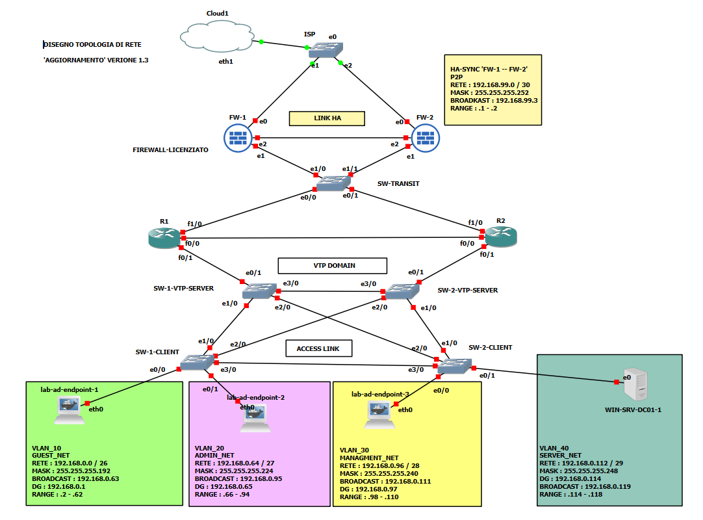
Topologia definitiva validata: cluster HA FortiGate con link heartbeat dedicato, maglia Distribution/Access ridondata (VTP Server/Client) con collegamenti pronti per Port Channel, Server_Net per il Domain Controller.
Traccia / note
Fase di solo disegno logico — nessun comando CLI eseguito. Validata la coerenza con gli standard reali (HA heartbeat su interfaccia dedicata, maglia Core/Distribution-Access, VTP Server ridondato).
0.2 — Piano di indirizzamento IP con metodologia VLSM
Blocco base: 192.168.0.0/24 + link HA dedicato
fuori blocco.
| Segmento | VLAN | Subnet | Maschera | Gateway | Range host | Broadcast | Indirizzi assegnabili |
|---|---|---|---|---|---|---|---|
| GUEST_NET | 10 | 192.168.0.0/26 | 255.255.255.192 | 192.168.0.1 | .2 – .62 | 192.168.0.63 | 62 |
| ADMIN_NET | 20 | 192.168.0.64/27 | 255.255.255.224 | 192.168.0.65 | .66 – .94 | 192.168.0.95 | 30 |
| MANAGEMENT_NET | 30 | 192.168.0.96/28 | 255.255.255.240 | 192.168.0.97 | .98 – .110 | 192.168.0.111 | 14 |
| SERVER_NET (WIN-SRV-DC01) | — | 192.168.0.112/29 | 255.255.255.248 | 192.168.0.113 | .114 – .118 | 192.168.0.119 | 6 |
| HA-SYNC (FW-1↔FW-2) | — | 192.168.99.0/30 | 255.255.255.252 | — (P2P) | .1 – .2 | 192.168.99.3 | 2 |
Spazio libero per crescita futura: 192.168.0.120 – 192.168.0.255
Traccia / note
Il calcolo VLSM è stato condotto partendo dal segmento con più host previsti fino al più piccolo (GUEST_NET → ADMIN_NET → MANAGEMENT_NET → SERVER_NET), assegnando a ciascuno la subnet più piccola possibile in grado di contenere gli host richiesti più il gateway, con la formula 2^n host_richiesti - 2 (indirizzo di rete e broadcast non assegnabili). Procedere dal segmento più grande al più piccolo è il metodo standard per evitare frammentazione: se si assegnassero le subnet in ordine casuale, i "buchi" residui tra un blocco e l'altro potrebbero non essere abbastanza grandi da ospitare un segmento successivo più esigente.
Il link di sincronizzazione HA tra i due FortiGate (192.168.99.0/30) è stato deliberatamente collocato fuori dal blocco principale 192.168.0.0/24: è un collegamento punto-punto tra soli due dispositivi, non un segmento utente, e tenerlo separato evita di "sprecare" indirizzi preziosi del blocco principale su un link che non ospiterà mai host reali.
0.3 — Asset inventory completo
| # | Nodo | Ruolo | Piattaforma | Versione | Identificativo | Risorse |
|---|---|---|---|---|---|---|
| 1 | FW-1 | Firewall primario HA | FortiGate-VM64-KVM | v7.6.7 build3704 | SN: FGVMEVGT9RJSLZ87 | 1vCPU/2GB |
| 2 | FW-2 | Firewall secondario HA | FortiGate-VM64-KVM | v7.6.7 build3704 | SN: FGVMEV_4Z9IEEQ52 | 1vCPU/2GB |
| 3 | ISP | Switch upstream | GNS3 nativo | — | — | trascurabile |
| 4 | SW-1-VTP-SERVER | Core/Distribution | Cisco IOU L2 | IOS 15.1(20130726) | ipbasek9-15.1g.bin | 512MB |
| 5 | SW-2-VTP-SERVER | Core/Distribution | Cisco IOU L2 | IOS 15.1(20130726) | ipbasek9-15.1g.bin | 512MB |
| 6 | SW-1-CLIENT | Access | Cisco IOU L2 | IOS 15.1(20130726) | Board ID: 2048003 | 512MB |
| 7 | SW-2-CLIENT | Access | Cisco IOU L2 | IOS 15.1(20130726) | ipbasek9-15.1g.bin | 512MB |
| 8 | WIN-SRV-DC01 | Domain Controller | Windows Server 2022 | Standard Eval, build 20348.587 | Key: W8JDY | 4GB/2vCPU |
| 9 | PC1 | Endpoint provvisorio | VPCS | — | → futuro WIN11-CLIENT-01 | trascurabile |
| 10 | PC2 | Endpoint provvisorio | VPCS | — | → futuro WIN11-CLIENT-02 | trascurabile |
| 11 | PC3 | Endpoint provvisorio | VPCS | — | → futuro WIN11-CLIENT-03 | trascurabile |
Traccia / note
Tenere un inventario aggiornato serve a diversi scopi pratici verificati durante questo stesso progetto: ha permesso di individuare che i due FortiGate hanno un limite di licenza esplicito (1 vCPU / 2GB RAM ciascuno), informazione che ha guidato il calcolo del budget di risorse della GNS3 VM; ha permesso di tracciare i giorni di valutazione residui e il numero di rearm disponibili sulla licenza Windows Server, evitando sorprese future; e fornisce un riferimento univoco (versioni, build, seriali) utile in fase di troubleshooting, per verificare rapidamente se un problema è già noto per quella specifica versione software.
1. Configurazione switch
1.1 — Hardening: AAA, SSH, gestione porte non utilizzate
Traccia / note
Procedura di hardening lavereremo un sotto step alla volta :
- Password di enable, accesso privilegiato.
- AAA locale + utente amministrativo.
- Dominio DNS + generazione chiavi RSA per SSH.
- Abilitazione SSH e disabilitazione Telnet.
- Hardening linee console e ausiliarie.
- Banner di accesso.
- Protezione brute force
- Disabilitazione servizi non essenziali
- Limitazione durata sessione e tentativi di login SSH
- Spegnimento porte non utilizzate, configurazione port
security (da definire al punto 1.2)
- Creazione VLAN parcheggio e assegnazione porte non
utilizzate (da definire al punto 1.2)
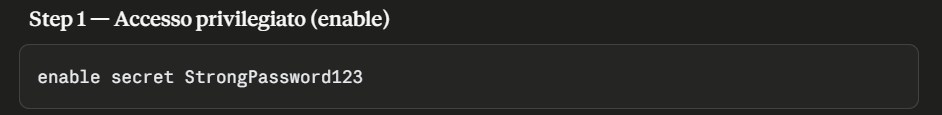
Traccia / note
imposta la password per accedere alla modalità enable (privilegio massimo). Su questa immagine IOU 15.1 IPBASEK9 il comando genera un hash Type 4, non Type 5/8/9 come preferito — limite noto della piattaforma.
Comandi di diagnostica
- show running-config | include enable secret : verifica hash cifrato, testo non in chiaro.
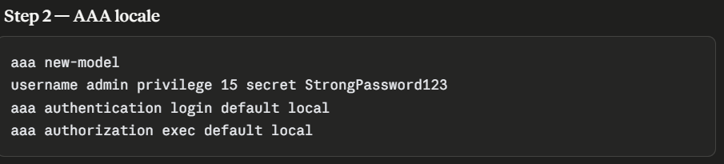
Traccia / note
- aaa new-model : Attiva il framework AAA 'Accounting,
Authentication, Authorization', sostituendo il modello legacy
.
- username admin priviledge 15 secret 'StrongPassword123':
crea un utente locale con massimo privilegio.
- aaa authentication login default local : impone che il login
su console VTY usi il DB utenti locale.
- aaa authorization exec default local : applica gli stessi
permessi locali in modalità EXEC.
Comandi di diagnostica
- show running-config | include aaa|username : conferma la presenza di AAA, utente, e hash cifrato.
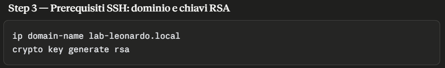
Traccia / note
- ip domain-name leonardo.local : imposta il dominio DNS per
la generazione delle chiavi RSA.
- crypto key generate rsa : genera le chiavi RSA per SSH. Alla
richiesta dei bit rispondere 2048
Comandi di diagnostica
- show crypto key mypubkey rsa : visualizza le chiavi RSA generate, confermando la corretta generazione.
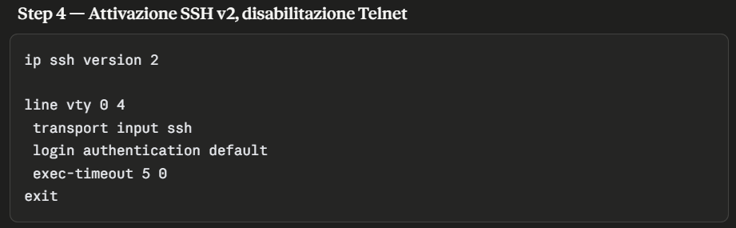
Traccia / note
- ip ssh version 2 : imposta il versionamento SSH 2, più
sicuro
- line vty 0 4 : entra nella configurazione delle linee VTY
(accesso remoto)
- transport input ssh : abilita solo SSH, disabilitando Telnet
- login authetication default : applica l'autenticazione AAA
anche alle sessioni remote
- exec-timeout 5 0 : imposta timeout di inattività a 5 minuti
Comandi di diagnostica
- show running-config | section line vty : conferma la
configurazione delle linee VTY e il timeout impostato.
- show ip ssh : verifica la configurazione SSH, mostrando la
versione e lo stato del servizio.
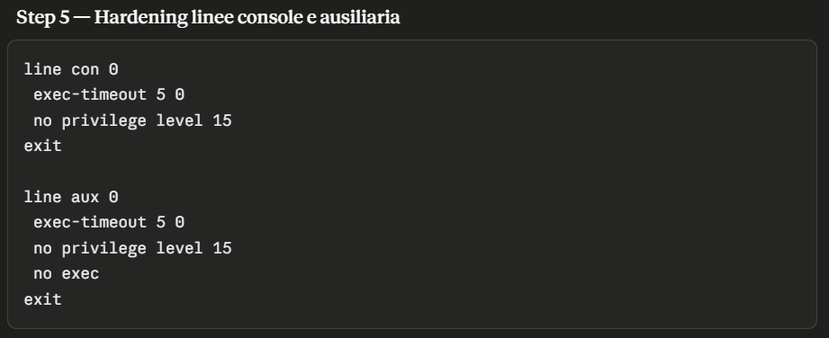
Traccia / note
- exec-timeout 5 0 : allinea il time out gia impostato su VTY
- no priviledge level 15 : rimuove l'accesso privilegiato
automatico da console e aux
- no exec : impostato su aux disabilita completamente la porta
ausiliaria.
Comandi di diagnostica
- show running-config | section line con : conferma la
configurazione della linea console.
- show running-config | section line aux : conferma la
configurazione della linea ausiliaria.
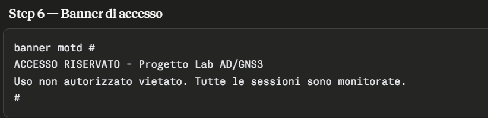
Traccia / note
- banner motd #...# : imposta un messaggio di accesso per
avvisare chi si connette che l'accesso è riservato.
Comandi di diagnostica
- show running-config | include banner : conferma la presenza
del banner di accesso.
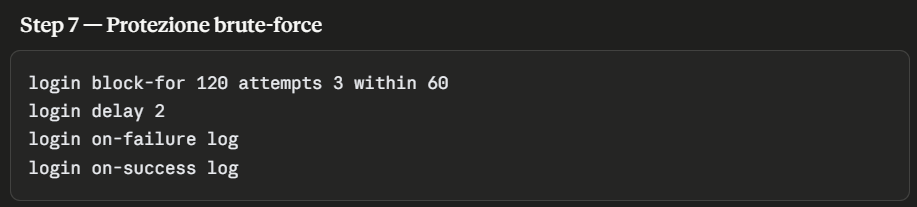
Traccia / note
- Login block for 120... : blocca tutti i tentativi di login
per 120 secondi se ne rileva 3 falliti in 60 secondi.
- Login delay 2 : imposta un ritardo di 2 secondi tra ogni
tentativo di login
- Login on-failure log : registra i tentativi falliti nel log
di sistema
- Login on-success log : registra i tentativi riusciti nel log
di sistema
Comandi di diagnostica
- show login : visualizza lo stato della protezione brute force e i tentativi di login recenti.
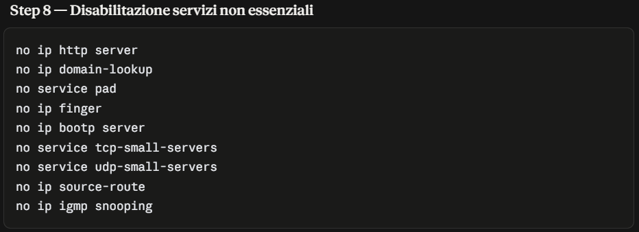
Traccia / note
- no ip http server : disattiva il server di gestione web HTTP
- no ip domain-lookup : evita che IOS tenti una risoluzione
DNS per ogni comando non riconosciuto
- no service pad : disabilita il protocollo PAD (Packet
Assembler/Disassembler)
- no ip finger : disattiva il servizio che permetteva di
interrogare da remoto le sessioni attive
- no ip bootp server : disabilita il servizio BOOTP,
'processore DHCP', non necessario dato che sara il fortigate a
gestire DHCP
- no service tcp/udp-small-servers : disabilita i servizi
TCP/UDP disattivano i servizi diagnostici legacy (echo,
chargen, discard, daytime)
- no ip source-route : impedisce l'elaborazione di pacchetti
con percorso di rete specificato dal mittente, utilizzato per
aggirare la sicurezza
Comandi di diagnostica
- show running-config | include
http|domain-lookup|pad|finger|bootp|source-route- : conferma
la disabilitazione dei servizi non essenziali.
- show ip http server status : conferma che il server HTTP è
disabilitato.
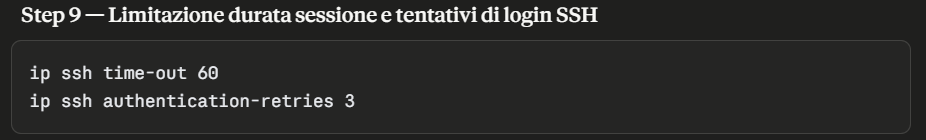
Traccia / note
- ip ssh time-out 60 : limita 60 secondi il tempo massimo per
completare la fase di negoziazione/autenticazione SSH
- ip ssh authentication-retries 3 : limita a 3 i tentativi di
login consetiti dentro la stessa sessione SSH già aperta.
Comandi di diagnostica
- show ip ssh : conferma la configurazione SSH, mostrando la versione e lo stato del servizio.
Problemi Riscontrati - 1.1 Hardening Switch
Durante l'hardening sono emersi quattro limiti legati specificamente all'immagine IOU 15.1 IPBASEK9 in uso (una build sperimentale del 2013), utili da documentare per chi replica il progetto con la stessa immagine.
Hashing password bloccato su Type 4: i tentativi di forzare esplicitamente Type 5 o Type 9 tramite algorithm-type sono sempre falliti con "Invalid input detected" — questa immagine non supporta affatto quella sintassi. Di conseguenza, il comando standard enable secret genera automaticamente un hash Type 4, algoritmo che Cisco ha ufficialmente riconosciuto come difettoso (advisory CISCO-SA-20130318-TYPE4: manca il salt e l'iterazione multipla, risultando persino più debole del più datato Type 5). Le versioni corrette (Type 8/9) sono disponibili solo da IOS 15.3(3)M in poi, quindi non raggiungibili su questa piattaforma. Accettato come limite noto e non risolvibile lato software.
Nessun supporto HTTPS: il comando no ip http secure-server non è mai stato riconosciuto. La verifica (show ip http server status) ha confermato "HTTP secure server capability: Not present" — il sottosistema HTTPS non è proprio compilato in questa immagine, quindi il comando è risultato superfluo più che fallito.
Comandi tcp/udp-small-servers non tracciati: pur essendo accettati senza errori dalla piattaforma, non compaiono in nessuna verifica del running-config (nemmeno con all), a differenza di tutti gli altri "no service" di default. Comportamento coerente con altre stranezze già osservate su questa build sperimentale — configurazione comunque applicata, solo non riflessa nell'output di verifica.
Nota aggiuntiva (non un problema): show clock detail mostra un orario già corretto ("Time source is hardware calendar") pur senza NTP configurato — comportamento normale dell'emulazione IOU, che eredita l'orario della GNS3 VM all'avvio del processo. Non è però una sincronizzazione continuativa reale, motivo per cui NTP con autenticazione resta comunque pianificato più avanti per garantire timestamp affidabili nei log di audit. Non presente RTC (Real Time Clock) essendo un emulatore.
1.2 — Configurazione VTP (dominio "LEONARDO") + Port Channel (Ethernet Channel)
Traccia / note
Procediamo con la configurazione del VTP (VLAN Trunking Protocol) per il dominio "LEONARDO". Questo protocollo permette la gestione centralizzata delle VLAN su più switch, evitando la necessità di configurare manualmente le VLAN su ciascun dispositivo. La configurazione prevede la definizione del dominio VTP, la scelta della modalità (server/client), e l'assegnazione delle VLAN necessarie per il progetto.
Procedura configurazione VTP, lavoreremo un sotto step alla
volta :
- Verifica preliminare stato VTP.
- Configurazione dominio VTP e versionamento.
- Password VTP.
- Impostazione modalità VTP.
- Creazione Port-Channel (LACP)
- Configurazione trunk 802.1Q, sulle interfacce Port-Channel.
- Configurazione interfacce in trunk verso i firewall
FortiGate.
- Configurazione interfacce in access verso gli endpoint.
- Designazione Primary Server.
- Verifica propagazione del dominio VTP
- Creazione VLAN solo dal primary SW-Server-VTP
- Creazione VLAN parcheggio + assgnazione porte non utilizzate
+ Shutdown porte non utilizzate
- Port Security sulle porte in access.
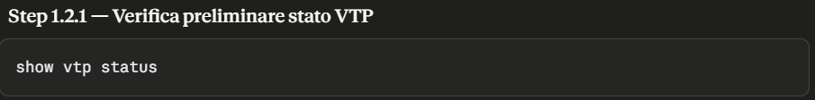
Traccia / note
- show vtp status : verifica lo stato del VTP, mostrando il
dominio attuale, la modalità (server/client), la versione e
altre informazioni utili.
- show vlan brief : visualizza le VLAN attualmente configurate
sullo switch.
Comandi di diagnostica
Il comando è di per sé diagnostico, non modifica la configurazione. Serve a confermare lo stato del VTP prima di procedere con le modifiche.
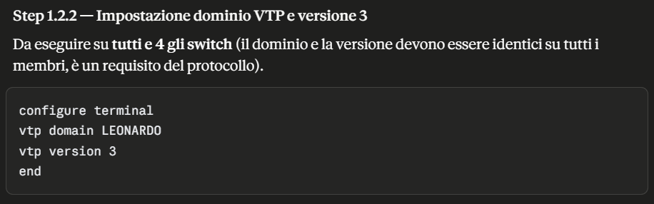
Traccia / note
- vtp domain TuoDominio : imposta il dominio VTP su
"TuoDominio".
- vtp version 3 : introduce il meccanismo primary server.
Comandi di diagnostica
- show vtp status : conferma la modifica del dominio e della
versione.
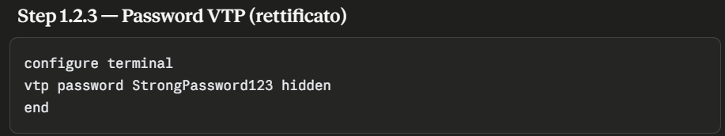
Traccia / note
- vtp password StrongPassword123 hidden : imposta una password
per l'autenticazione VTP, proteggendo la propagazione delle
VLAN tra switch 'hidden' cifra la password.
Comandi di diagnostica
- show vtp password : conferma la presenza della password VTP.
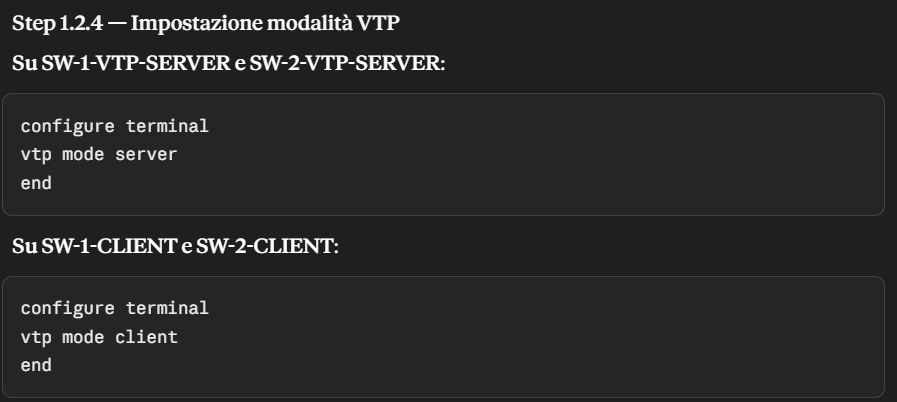
Traccia / note
- vtp mode server : imposta lo switch come server VTP, che può
creare, modificare e cancellare VLAN.
- vtp mode client : imposta lo switch come client VTP, che
riceve le informazioni sulle VLAN dal server.
Comandi di diagnostica
- show vtp status : Verifica la modalità VTP assegnata agli
switch.
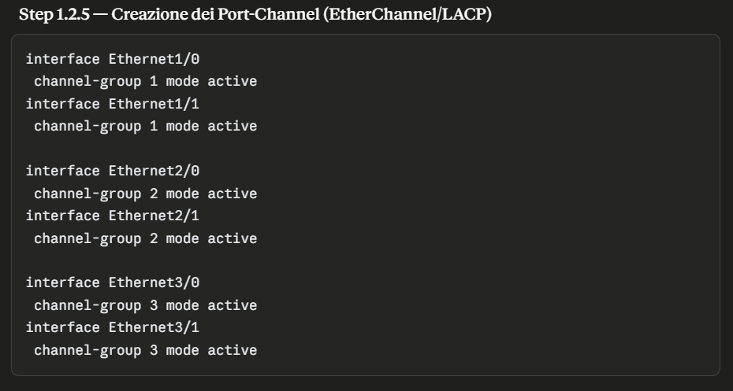
Traccia / note
- channel-group 1/2/3 : assegna ciascuna interfaccia fisica al relativo gruppo Ethernet-Channel, utilizzando il protocollo LACP in modalità active, questa modalità avvia attivamente la negoziazione LACP con l'altro capo del collegamento, se i due lati non sono compatibili, il protocollo rifiuta di formare il bundle, prevenendo loop di rete o traffico incoerente.
Comandi di diagnostica
- show etherchannel summary : mostra l'insieme di tutti i pool
logici creati le interfacce fisiche coinvolte e il loro stato
di attività.
- show interfaces port-channel n : mostra nel dettaglio ogni
singola interfaccia logica elencando stato di attività, banda
aggregata e indirizzo fisico.
- show lacp neighbor : conferma la negoziazione LACP attiva
con l'altro capo del collegamento.
- show lacp counters : mostra i pacchetti LACPDU inviati e
ricevuti per interfaccia utile per diagnosticare collegamenti
ancora in stato 'su - suspended'
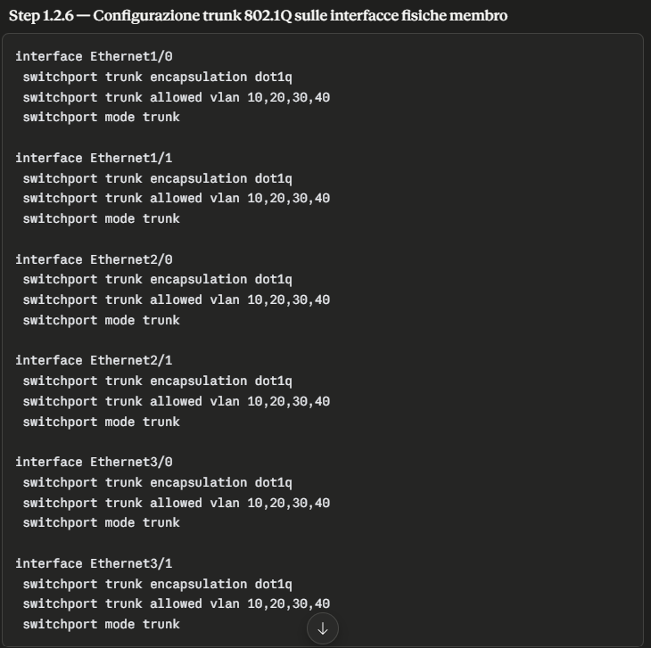
Traccia / note
- switchport trunk encapsulation dot1q : specifica 802.1Q come
metodo di incapsulamento
- switchport trunk allowed vlan 10,20,30,40 : limita il trunk
alle sole VLAN specificate
- switchport mode trunk : imposta la modalità trunk (permette
il passaggio delle informazioni di più VLAN in un unico link)
Questa configurazione è stata ripetuta su ogni switch, su
questa immagine IOU le impostazioni switchport applicate ai
port-channel non si propagavano correttamente ai membri fisici
coinvolti, quindi è risultata affidabile la configurazione su
ogni singola porta.
Comandi di diagnostica
- show interface trunk : conferma la colonna VLAN allowed
trunk
- show etherchannel summary : mostra che tutti i gruppi logici
con link aggregati abbiano il flag (P) bundled in
port-channel.
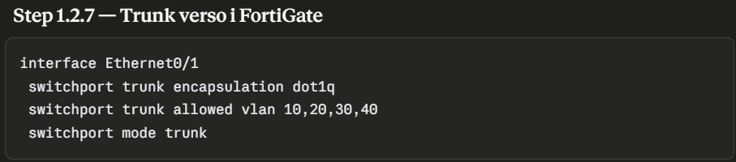
Traccia / note
- Questi comandi sono identici al precedente step.
Comandi di diagnostica
- show interfaces Ethernet 0/1 switchport : mostra nello specifico la configurazione di una singola interfaccia.
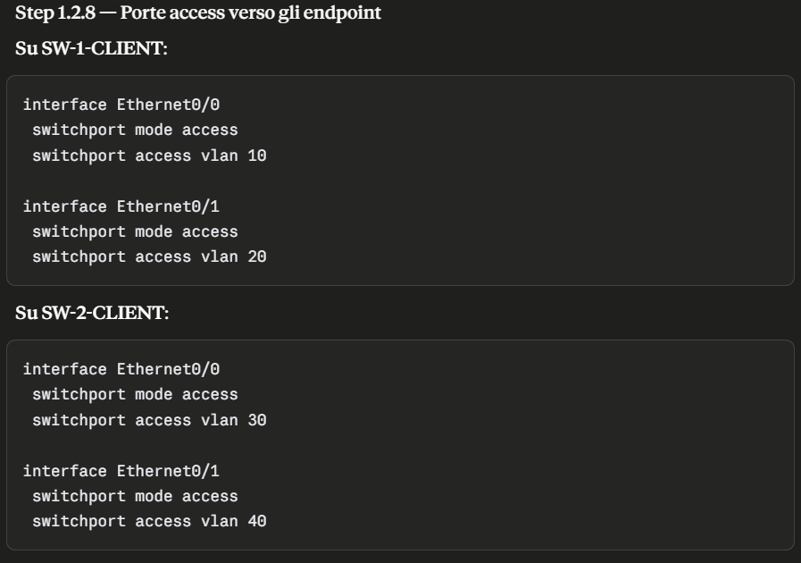
Traccia / note
- switchport mode access : definisce per l'interfaccia la
modalità access, ottima misura di hardening anti-vlan-hopping
tecnica di attacco che permette a un dispositivo collegato a
una singola VLAN di superare la segmentazione e raggiungere il
traffico di altre VLAN.
- switchport access vlan 'n' : assegna la porta alla VLAN
specifica.
Comandi di diagnostica
- show interfaces status : come il precedente mostra il ripilogo delle interfacce e la loro assegnazione.
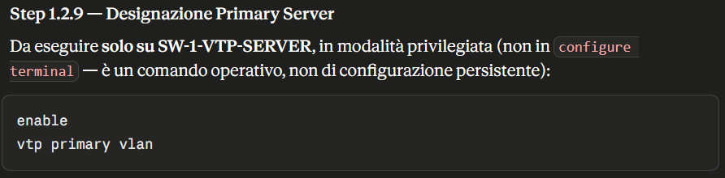
Traccia / note
- vtp primary vlan : promuove lo switch nel quale è stato
eseguito il comando a Primary Server riconosciuto dal DB VLAN
del dominio VTP, da questo momento lo switch protra apportare
le modifiche alle VLAN.
Comandi di diagnostica
- show vtp status : mostra lo stato della configurazione del VTP, da eseguire su tutti gli switch appartenenti al dominio VTP, prestare particolare attenzione alla voce Primary Descriprion, e verificare che sia effettivamente stato riconosciuto come Primary Server lo switch selezionato.
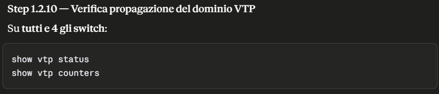
Traccia / note
Per questo punto non e necessario eseguire comandi specifici di esecuzione, andremo a verificare la funzionalità con dei comandi di dignostica.
Comandi di diagnostica
- show vtp status : da eseguire su tutti gli switch
appartenenti al dominio VTP, prestare particolare attenzione a
VTP Version Running, VTP Domain Name, Configuration Revision,
MD5 digest, le voci restituite devono essere identiche per
ogni switch.
- show vtp counters : mostra che i pacchetti VTP stanno
realmente circolando sui trunk configurati.
Prestiamo particolare attenzione a Configuration Revision, si
tratta di un contatore che si incrementa di 1 ogni volta che
viene apportata una modifica al database VLAN da parte del
Primary Server.
Per quanto riguarda MD5 digest si tratta di un hash calcolato
sull'intero contenuto del database VLAN, e come un'impronta
digitale che varia a ogni minima differenza di contenuto, si
tratta del controllo più affidabile se combacia su tutti gli
switch si ha la certezza che il DB VLAN sia identico byte per
byte ovunque accertando che ogni switch del dominio VTP sia
l'esatta copia dell'altro.
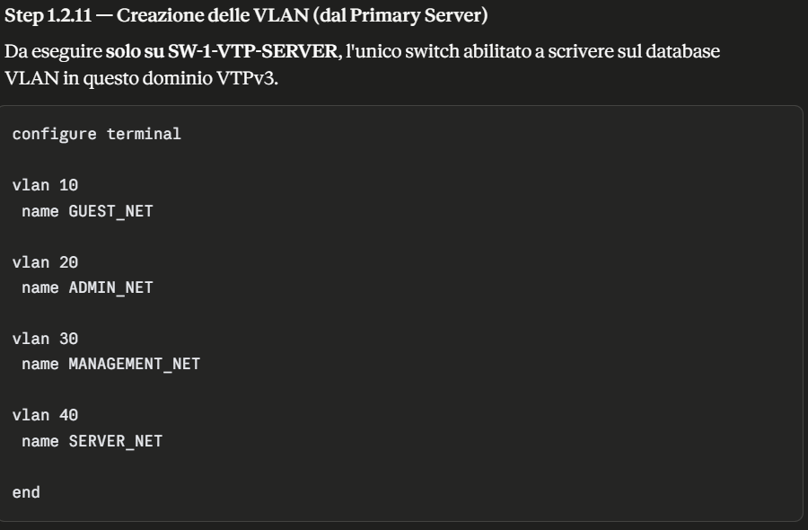
Traccia / note
- vlan 'id' : questo comando crea la VLAN con uno specifico
numero ID.
- name 'nome' : assegna un nome descrittivo alla VLAN, e un
dato puramente informativo ma resta fondamentale la coerenza
nella nomenclatura, a mio avviso è essenziale essere il piu
esplicativi possibile.
Comandi di diagnostica
- show vlan brief : esegui questo comando su ogni switch appartenente al dominio VTP, mostra il riepilogo delle VLAN create localmente nel dispositivo e accertarsi che queste vengano replicate sugli switch restanti.
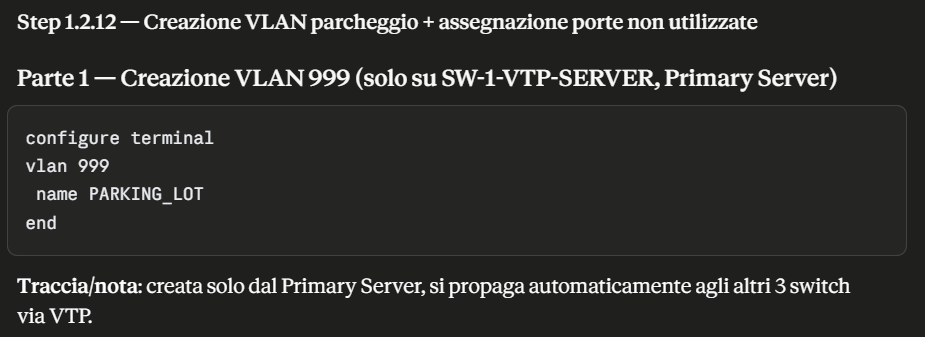
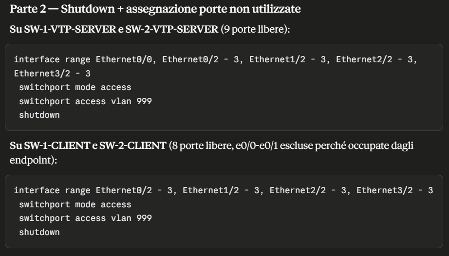
Traccia / note
Per la creazione della VLAN parcheggio la procedura
corrisponde a quanto visto nella creazione delle VLAN
10,20,30,40; Questa viene sempre creata dallo Switch Primary
Server, e necessario ripetere il comando 'vtp primary vlan' in
quanto essendo un comando operativo il dispositivo perde il
privilegio Primary Server al suo riavvio.
- interface range ... : applica lo stesso blocco di comandi a
tutte le interfacce selezionate, ottimo metodo per evitare di
configurare le interfacce una alla volta.
- switchport mode access : comando necessario per assegnare
una VLAN access.
- switchport access vlan 999 : assegna la porta fisica alla
VLAN parcheggio, che resta isolata dal resto della rete.
- shutdown : spegne completamente la porta, essendo non
utilizzata.
Comandi di diagnostica
- show vlan brief : esegui questo comando su ogni switch
appartenente al dominio VTP, mostra il riepilogo delle VLAN
create localmente nel dispositivo e accertarsi che queste
vengano replicate sugli switch restanti.
- show interfaces status : mostra lo stato delle porte.
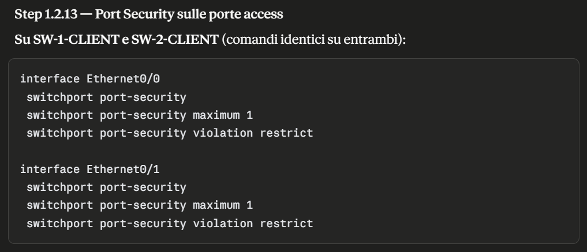
Traccia / note
La funzionalità port-security è una misura di sicurezza
applicata a livello 2 'Data Link', permette di controllare e
limitare l'accesso fisico ad una specifica porta dello switch,
senza il port security qualsiasi dispostivo collegato
fisicamente a una porta in access puo ottenere accesso alla
rete.
- switchport port-security : attiva la funzionalità sulla
porta, prima di attivare questo comando la porta deve gia
essere impostata in access.
- switchport port-security maximum 1 : limita l'accesso fisico
alla porta a un solo indirizzo MAC.
- switchport port-security violation restrict : in caso di
violazione restrict scarta il traffico dell'indirizzo non
autorizzato e genera un log, e possibile anche in caso di
violazione impostare lo spegnimento totale della porta che va
dunque in shutdown.
Al momento ho deciso di non specificare gli indirizzi MAC che
possono avere accesso al dispositivo, in quanto in questa fase
del progetto la topologia di rete comprende i VPCS questi
verrano utilizzati per testare la connettività, non appena
verranno importate le Virtual Machines Windows, applicheremo
un ulteriore livello di restrizione sul port security.
Comandi di diagnostica
- show port-security : mostra l'insieme di tutte le porte
protette nello switch.
- show port-security interface ethernet 'n' : mostra il
dettaglio per ogni singola porta
Prestiamo attenzione a quest'ultimo comando in quanto
restituisce un output molto interessante.
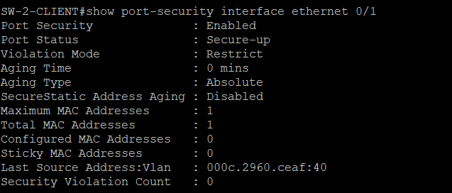
Questo output e molto interessante in quanto mostra nello specifico, lo stato di attività del port-security, se ci sono state violazioni, al momento non è stata registrata nessuna violazione lo capiamo dalla voce 'Port Status : Secure-up', viene indicata anche la modalità di restrizione in questo caso 'Restrict', molto interessante anche la voce 'Aging Time : 0 mins' si tratta di un timer di apprendimento degli indirizzi MAC possiamo impostare un timeout automatico che resetta l'indirizzo. Ci viene mostrato anche il limite degli indirizzi MAC che possono essere appresi dalla porta, e non solo anche se sono stati definiti staticamente degli indirizzi MAC. Le ultime 2 voci 'Last Source Address :' questo ci mostra il MAC appreso che identifica un host e la VLAN di provenienza, 'Security Violation Count' tiene traccia delle violazioni.
1.3 — Configurazione STP
Da completare.
1.4 — Verifica configurazione Port Channel
Da completare.
2. Configurazione firewall (FortiGate)
2.1 — Routing (subinterfacce VLAN)
Da completare.
2.2 — Firewall Policy
Da completare.
2.3 — DHCP
Da completare.
2.4 — Alta affidabilità (cluster HA)
Da completare.
3. Configurazione Windows Server
3.1 — Definizione Active Directory
Da completare.
3.2 — Domain Controller (DNS integrato)
Da completare.
3.3 — GPO
Da completare.
4. Deployment client
4.1 — Creazione VM master Windows 11
Da completare.
4.2 — Clonazione e Sysprep (×3)
Da completare.
4.3 — Join al dominio
Da completare.
5. Validazione e collaudo
5.1 — Connettività inter-VLAN
Da completare.
5.2 — Risoluzione DNS interna
Da completare.
5.3 — Lease DHCP per VLAN
Da completare.
5.4 — Test failover HA
Da completare.
5.5 — Autenticazione dominio multi-client
Da completare.
6. Documentazione
6.1 — README.md
Completato: panoramica, obiettivi, prerequisiti.
6.2 — Documento HTML/CSS di tracciamento
In corso — questa stessa pagina.
6.3 — Troubleshooting log
Da completare.